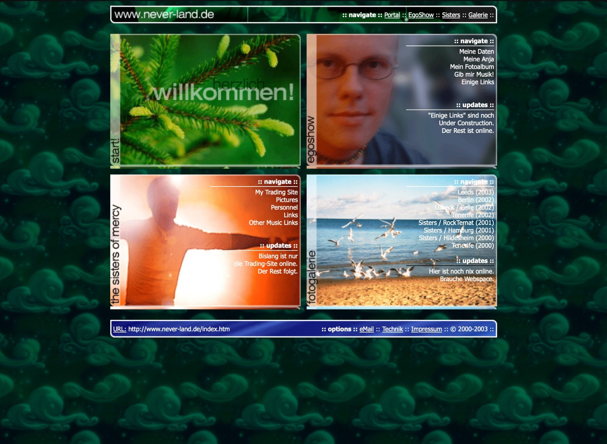

:: behind the pixels ::
Technik & Gestaltung
NEVER LAND ist keine neue Website mit Retro-Skin. Es ist eine alte Website, die mehr als zwanzig Jahre später noch einmal weitergebaut wird.
Die technische Grundlage ist heute eine andere. Die Idee dahinter erstaunlich wenig: eine persönliche Seite, selbst gebaut, ohne Plattformlogik und ohne den Anspruch, wie jede andere Website auszusehen.
2003 → 2026
:: same place, different web ::
Die ursprüngliche Version von never-land.de entstand Anfang der 2000er: statisches HTML, kleine Grafiken und GIFs, feste Pixelmaße und eine Gestaltung, die für die damaligen Bildschirmgrößen und Browser gedacht war. Vieles wurde direkt im Markup gelöst; Responsive Design war noch kein praktischer Teil des Webs.
2026 wurde die Seite nicht ersetzt, sondern neu interpretiert. Die alten visuellen Konstanten – Panels, Pixeltypografie, Texturen, reduzierte Navigation und der etwas eigenwillige Portal-Charakter – bleiben erhalten. Darunter arbeitet heute aber ein sauberes responsives Layout, das vom Smartphone bis zum großen Desktop funktioniert.
Damit ist der aktuelle Stand weder Museum noch Replik. Eher eine Fortsetzung: Was wäre aus der Seite geworden, wenn sie nie verschwunden wäre?
[ screenshot: never-land.de / 2003 ]

Bewusst keine 08/15-Website
:: no hero. no funnel. no growth hack. ::
Viele moderne Websites folgen derselben Choreografie: große Hero-Fläche, Claim, drei Feature-Kacheln, Social Proof, Call-to-Action. Das ist für Produkte und Kampagnen oft sinnvoll. Für eine persönliche Website muss es aber nicht automatisch die richtige Antwort sein.
NEVER LAND darf deshalb Ecken und Eigenheiten behalten. Navigation muss nicht wie eine SaaS-Landingpage aussehen. Inhalte dürfen nach Sammlung, Archiv, Fanzine oder persönlichem Webspace wirken. Das Design zitiert die frühe Webästhetik, ohne deren technische Grenzen mitzuschleppen.
Kurz: retro in der Haltung, nicht in der Usability.
Der Stack 2026
:: static is a feature ::
HTML5 & CSS
Semantisches HTML bildet weiterhin den Kern. Das Layout basiert auf modernem CSS, insbesondere Grid, Flexbox, responsiven Größen und Media Queries. Wo sinnvoll, bleiben alte Klassen und gestalterische Referenzen erhalten.
Bootstrap 5.3
Bootstrap liefert ein robustes Grundgerüst und Utilities. Die eigentliche Optik kommt jedoch aus dem eigenen Stylesheet – NEVER LAND soll nicht wie ein Bootstrap-Template aussehen.
Lokale Fonts
Inter übernimmt den Fließtext, Silkscreen die pixelige Portalstimme und Geist Mono technische beziehungsweise zitierende Elemente. Die Fonts werden lokal ausgeliefert.
GitHub & GitHub Pages
Der Quellstand liegt in Git. Änderungen sind nachvollziehbar, ältere Stände bleiben erhalten und die aktuelle Version kann direkt als statische Website veröffentlicht werden.
Responsive, aber nicht generisch
:: 320px to battlestation ::
Die alte Seite dachte in festen Abmessungen. Der Rebuild denkt in Proportionen und Breakpoints. Portal-Kacheln, Typografie, Abstände, Header und Footer passen sich an die verfügbare Fläche an. Auf kleineren Displays wird aus dem zweispaltigen Portal eine einzelne Spalte; Navigation und Inhalte bleiben ohne Zoom oder horizontales Scrollen bedienbar.
Ziel ist dabei nicht, Desktop und Mobile identisch aussehen zu lassen. Entscheidend ist, dass dieselbe visuelle Sprache auf beiden funktioniert.
Altes Material, neue Werkzeuge
:: restore / remix / rebuild ::
Ein Teil der Gestaltung greift auf originales Material der früheren Website zurück: alte GIFs, Screenshots, Texturen und Motive. Andere Elemente werden für den heutigen Einsatz neu aufgebaut oder aus vorhandenem Material weiterentwickelt.
Dabei kommen auch generative Werkzeuge zum Einsatz. ChatGPT beziehungsweise OpenAI-Tools werden unter anderem genutzt, um vorhandene Bilder zu restaurieren, freizustellen, zu erweitern oder gestalterisch an den neuen Kontext anzupassen. Das Ziel ist nicht, beliebige KI-Bilder zu produzieren, sondern bestehendes Material dort weiterzuführen, wo die ursprünglichen Assets technisch oder gestalterisch an ihre Grenzen kommen.
Wenn Bildmaterial inhaltlich wesentlich verändert oder vollständig neu erzeugt wurde, soll das nicht als historische Originalaufnahme ausgegeben werden.
Ein paar Regeln
:: constraints make the site ::
- Keine externe Schriftbibliothek, wenn es lokal genauso gut geht.
- Kein JavaScript nur für Effekte, die CSS bereits beherrscht.
- Keine Komponenten nur deshalb, weil moderne Websites sie normalerweise haben.
- Alte Assets dürfen sichtbar alt sein – solange sie bewusst eingesetzt werden.
- Mobile ist kein nachträglicher Sonderfall.
- Persönlicher Charakter schlägt Template-Perfektion.
Status
NEVER LAND ist weiterhin im Umbau. Einige Bereiche stammen direkt aus dem alten Bestand, andere sind bereits vollständig neu aufgebaut und wieder andere existieren momentan nur als Idee. Genau das gehört zum Projekt.
last major rebuild: 2026 / still under construction, obviously.
Und der Name?
:: we will never, never land ::
Könnte die Seite etwa mit der Ranch eines ehemaligen und in den Schlagzeilen vertetenen "King Of Pop" zusammenhängen? Oder gar mit Peter Pan? Die Antwort: Hell No und No. Die Lösung befindet sich auf dem Album "FLOODLAND" -- dort findet ihr einen Song namens "NEVER LAND (a fragment)". In einem Interview 1987 erläuterte der Sänger Andrew Eldritch, dass der Song eigentlich länger war und an einer Stelle im Song sich vorstellt, die Menschheit würde auf die Erde zurasen und mitten durchschießen -- "we will never, never land" ... Also, viel Spaß auf dieser Site und dem Ticket to Syria ...